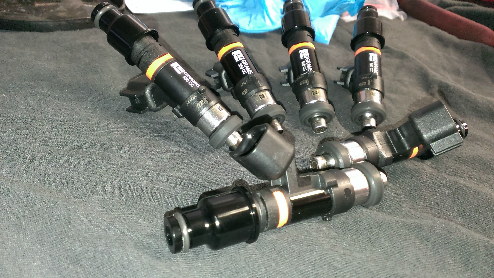
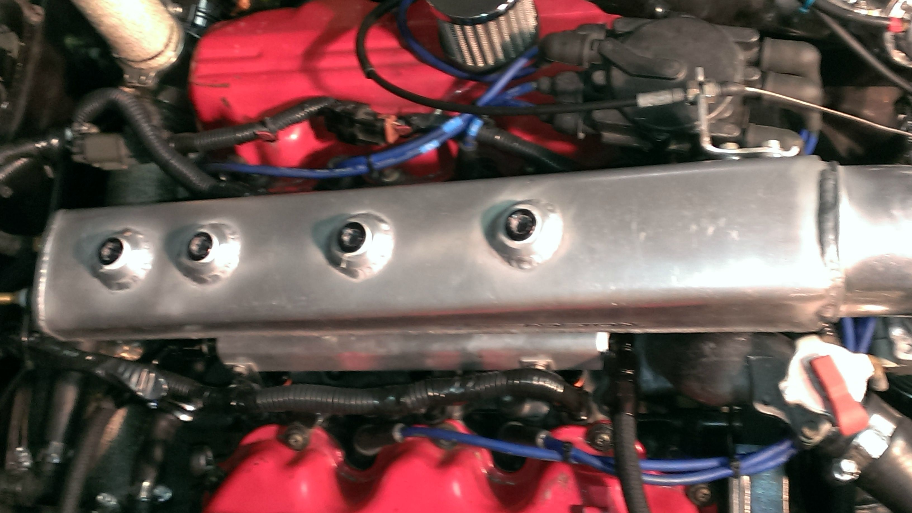

-
When changing to o-ring injectors such as bosch ev14 it seems the lower intake manifold injector ports need to be bored out? Are there any resources that describe this process?
Or better yet, are there +500cc/min fuel injectors that are both compatible with o-ring rails and will mate with the lower intake port?
Thank you for any help -
I installed my ID 1000cc injectors that are ev14 size just fine without having to modify the lower intake. I used stock Z31 lower o rings (donut shaped ). What injectors are you trying to fit?
BTW I have some 700cc injectors that I'm going to sell that are Nippondenso style and the part that goes in the lower intake is just like the stock injectors and the top intake side uses 11mm o ring.Shiro #443

-
I have no injectors selected at the moment.
Currently going full AN.
I'm interested, PM'd. -
Is there any cross reference to the injector type we can run?
i.e. RB20/13B/4G63/KA24 injectors are a drop in replacement
i really don't want to drop hundreds on something that is not compatible and is not returnable
Something like this style and flow rate is what i have in mind. http://www.ebay.com/itm/6-750cc-Niss…cf8278&vxp=mtr -
What fuel rails are you gonna use?
I still have the injectors if you're interested. 11mm top O-ringShiro #443
-
ASCO/PALLNET, 11mm
88ECU wired for low imp.
I'm looking for a no fuss drop in deal. Thanks for the offer but after cleaning/flow test, shipping, connectors, and gaskets i'm basically at the asking price of the auction above. -
Sale on ID 725cc injectors for $612
http://www.tunersports.com/injector-…-6_p40908.html
and even cheaper: ID 1000cc injectors for $ 576 shipped(same ones I just installed)
http://www.tunersports.com/injector-…-6_p40881.html
Only about 3 hours left on the 1000cc injectors sale and the come with the connectors
The ID injectors are high impedance . Just remove your dropping resistors.
Those that you posted the link to are of questionable quality.Shiro #443
-
Awesome thanks Rick
I was looking at the ID725's ever since you mentioned the company. The ID1000's are just way out of my needs, the 725 seems like a good fit and still leaves room to go bigger. -
If you go with fiveO injectors or any other just get some that fit the rb26dett engine,87-92 RX7, and some Supras. Just make sure it's an 11mm top o-ring and use OEM lower o-rings where it goes into the lower intake manifold.Shiro #443
-
Since as you mentioned, stuff like 4G63 injectors are drop in replacements (with a proper fuel rail) I generally just search for replacements for one of those in the size I need.Prius… because Pretentious wouldn't fit across the back of the car…
Cheap, Fast, Reliable - pick any two
My 1986 Turbo Build -
Thanks guys, it's much easier to search for injectors using more common applications.
I've read good things, and not so good things about themOriginally posted by Rick88ss View Post
Really sucks the sale ends so soon after picking up all this AN stuff. I'll be shopping around a bit more, and knocking out some other loose ends before making the order. -
these are the one i got from fivo
http://www.fiveomotorsport.com/f87eus550-denso -
Have you had the set up tuned? -
Just looking through some old books.
Source and excerpts below.
Is there any concern by running dropping resistors on late ECU drivers. As in, are they strong enough to transfer the increased electrical load? I've read multiple occurrences of 'drivers' being burnt from years ago to now.
12193876_10106742837691135_3219247665759669755_n.jpg
lindsey-walter.jpg -
Thanks again for the info to those who helped, install was straight forward.
These are Bosch EV14's listed for a RB26DETT and they fit great
Grams PN: G2-XXXX-0704. The x's are the flow rate in cc/min, example 0550, 0750, etc, etc. The 0704 is per-application fitment, so a 11mm upper ring and OEM style lower ring, EV-6 connector, and high impedance. all rings and connectors included.
I want to give a shoutout to Rick for pointing me to www.tunersports.com i contacted their customer service because these were listed on backorder, Justin a customer rep, contacted Grams directly and had them drop shipped, good little sale going on saved me some $$$ and Justin had the shipping expedited at no extra cost, the package arrived in less than 24hrs from it's shipping destination in CA to my door step in VA
Also a bump for cms.gramsperformance.com for being on their game, and providing a quick shipment. The injectors were also pre-assembled which was nice, I of course inspected them before install and everything was spot on.



Copyright © 2006–. All rights reserved. Privacy Policy